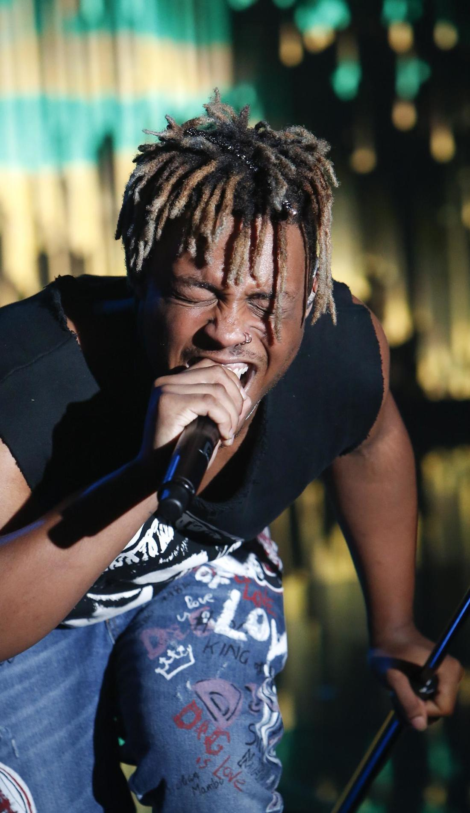
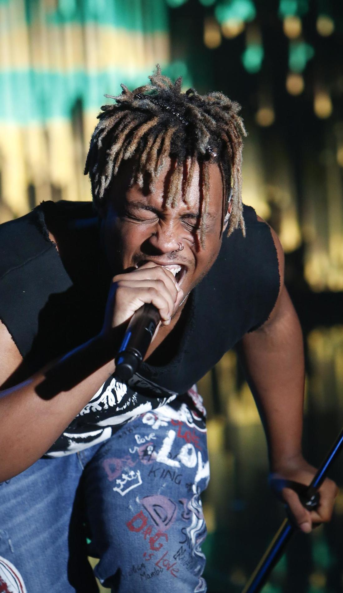
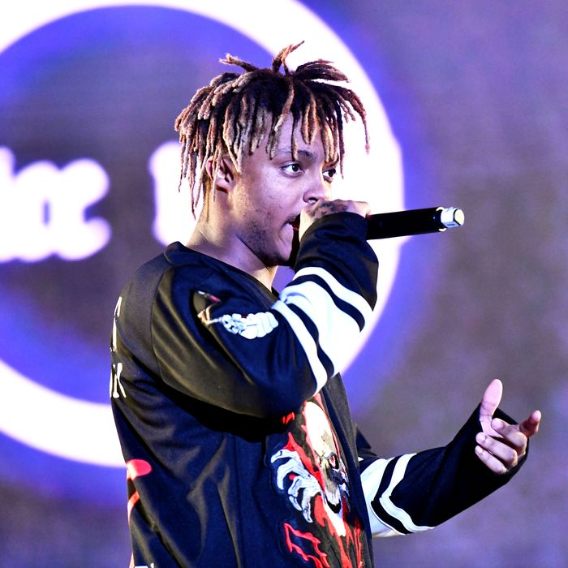
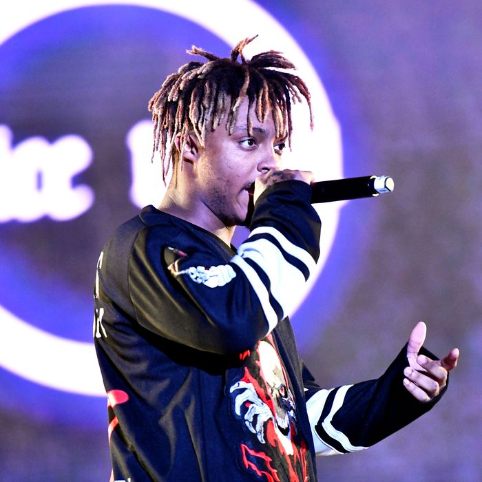
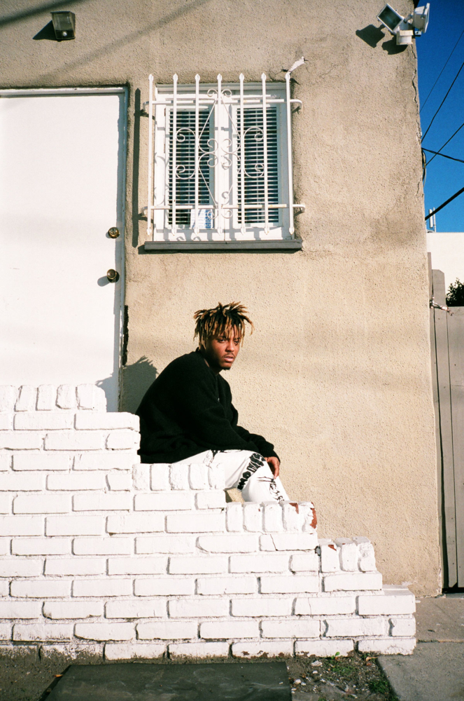
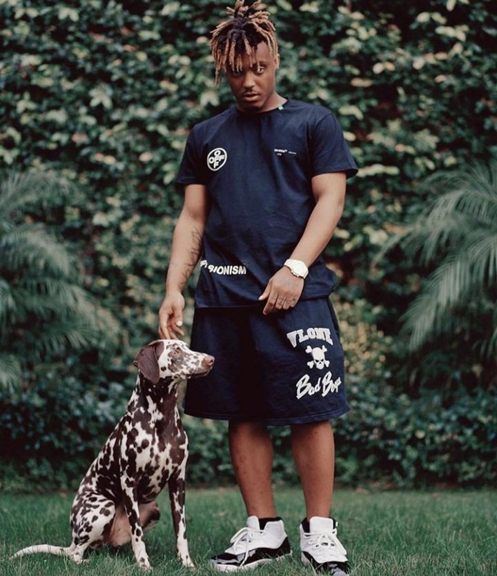
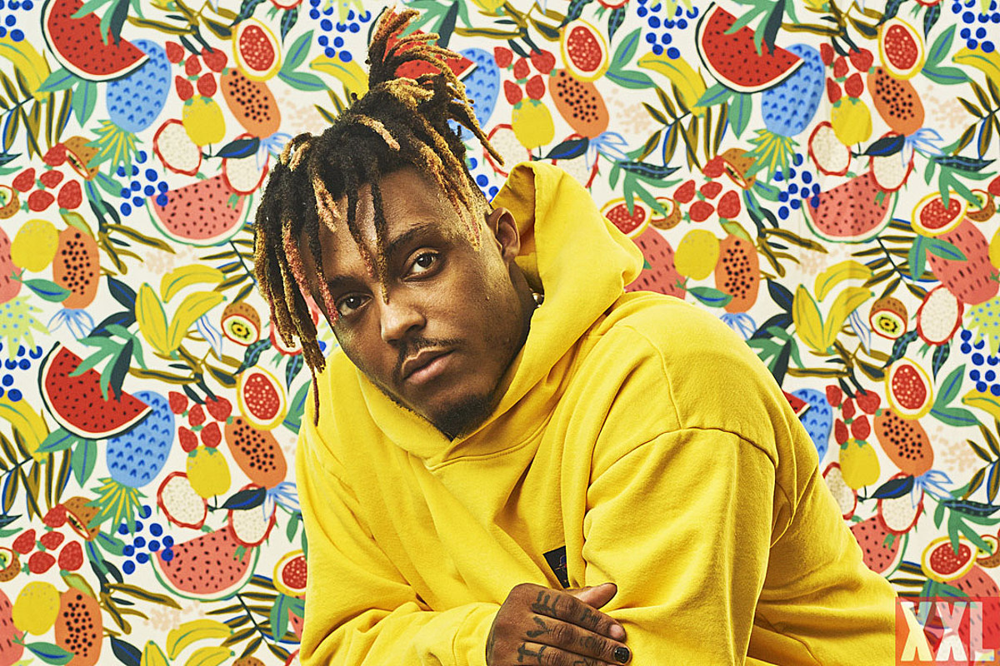
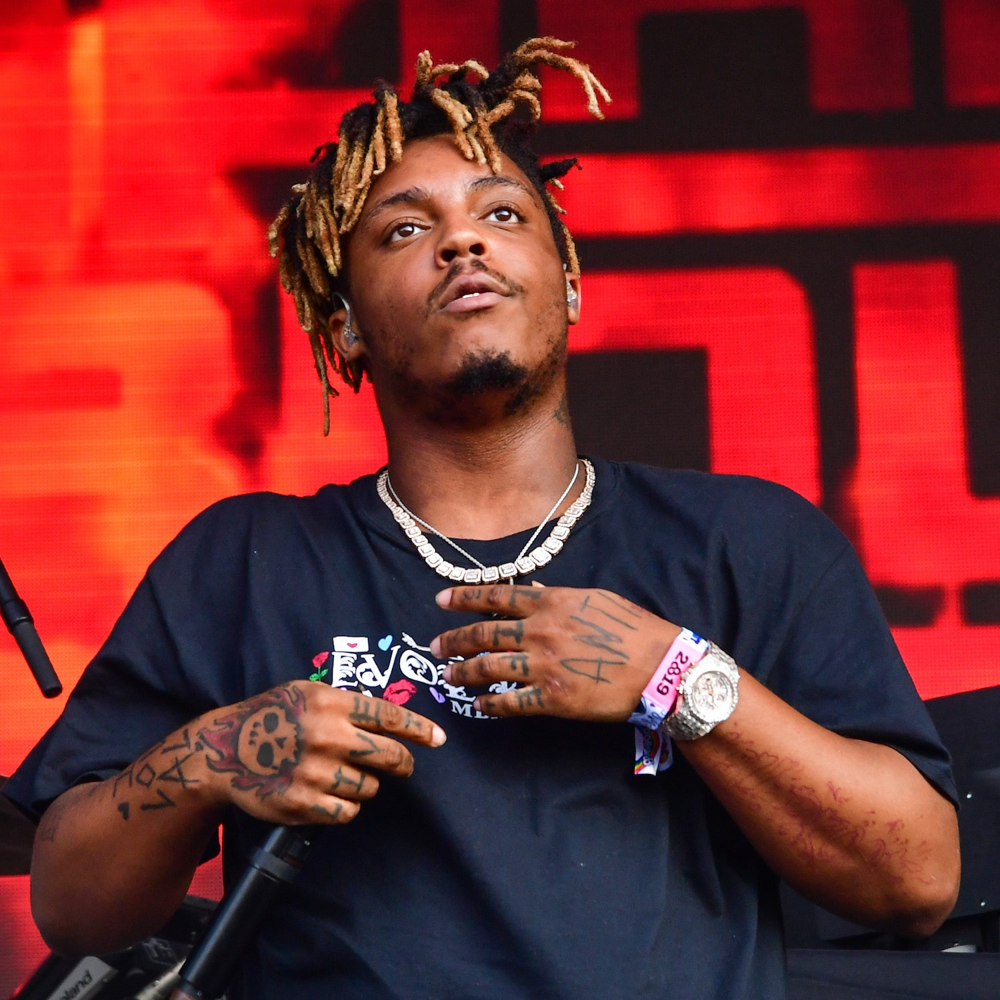

Juice WRLD
'There is just so much trash in rap'
 

 





Juice WRLD: ‘For me, it’s therapy. Every time I make music, it helps me cope’
Juice WRLD is contemplating another life. “You think I could be a FedEx worker, Mom?” he asks across the room, a suite in a swanky Soho hotel filled with family and friends. Two nights previously, he was commanding moshpits at London’s O2 Arena, as tour support to Nicki Minaj. By the end of the week, his second album, Death Race for Love, will be at No 1 in the US charts. This weekend, he plays alongside Cardi B, Travis Scott and Future at London’s Wireless festival; he collaborated with the latter on the album WRLD on Drugs, which reached No 2 in the US last year. Still, the man born Jarad Higgins cannot help wondering where he would be had his esoteric blend of 00s emo and prescription-medicated hip-hop not blown up. “Music was so nearly just a hobby for me, so I’m always thinking about that,” he says. “What I’d do instead, who I’d be if it weren’t for all of this.” Don’t expect to find him delivering parcels any time soon. Since Higgins started recording songs on his phone in 2015 while still at high school, the 20-year-old has evolved from SoundCloud rap also-ran to chart-busting mainstream name. Exploring anxiety and unrequited romance over booming trap beats and minor-chord guitars, he has won a fanbase raised in an internet era in which genre tribalism has been dissolved. Tracks such as his Sting-sampling 2018 breakout hit Lucid Dreams have earned him billions of streams and the approval of Alicia Keys, who covered it at this year’s Grammys. Not that Higgins saw that. “I was taking a piss and missed it,” he laments today.
Click here to know more about Juice WRLD's life